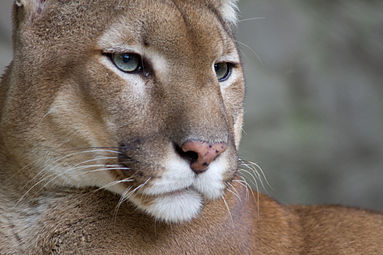

El puma, león de montaña o león americano (Nombre científico: Puma concolor)1 es un mamífero carnívoro de la familia Felidae nativo de América. Este felino vive en más lugares que cualquier otro mamífero silvestre terrestre del continente, ya que se extiende desde el Yukón, en Canadá, hasta el sur de la cordillera de los Andes y la Patagonia en América del Sur. El puma es adaptable y generalista, por lo que vive en los principales biomas de toda América.
